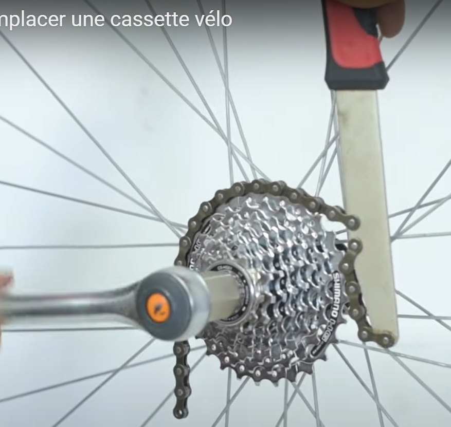
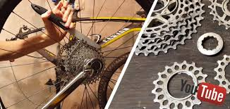

7 Tyres and wheels
Wheel truing, cassette removal, and tyre basics.
7.1 Wheel truing
7.1.1 Tools
{kind=link}
- Spoke wrench (correct size for your nipples)
- Truing stand or frame as a guide
- Dish gauge (optional) — checks rim centreing on the hub
- Lateral indicator — measures lateral run-out (“dish” error in the sideways plane)
{kind=link}
7.1.2 Truing procedure
Spoke nipples tighten clockwise (viewed from the rim), increasing tension.
- Check for broken spokes; replace any that are damaged.
- Bring overall tension up evenly before fine truing.
- Correct run-out in groups of 3–4 spokes at a time:
- If the rim pulls left, tighten right-side spokes and/or loosen left-side spokes.
- Reverse for movement to the right.
- Work in ¼ or ½ turn increments — never force a nipple to its limit.
Full tutorial: Le Cyclo — wheel truing
7.2 Cassette removal
Identify whether you have a cassette (modern freehub) or a freewheel (screw-on, common on ≤ 7-speed bikes).
Video: cassette removal
- Fit the chain whip to hold the sprockets.
- Insert the lockring tool and turn the lockring anti-clockwise.


7.3 Tyres
7.3.1 Routine checks
7.3.2 Tyre removal and fitting
7.3.3 When to replace
| Sign | Action |
|---|---|
| Frequent punctures on same wheel | Inspect rim tape and spoke ends |
| Squared-off tread profile | Replace tyre |
| Visible casing threads | Replace immediately |
| Age > 3–5 years (garage storage) | Consider replacement even if tread looks fine |